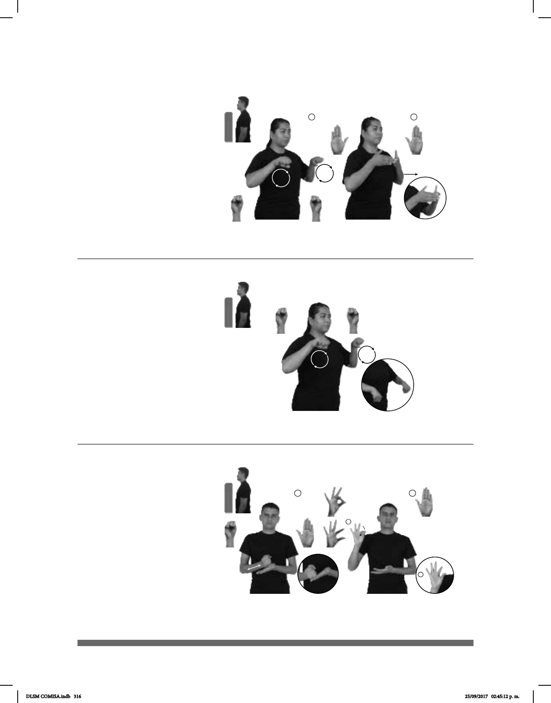

316
1 2
Seña: SC I. y II. SS
I. S.1; II. B-P.2
I. Palmas hacia abajo; II.
Las palmas se encuentran frente a
frente y las puntas de los dedos setocan.
A la altura del pecho.
I. Los brazos se mueven
formando círculos hacia el frente; II.
Recto hacia el frente.
Simula la acción de
remar en lancha y el avance de ésta.
sust. f. Embarcación ligera
de remos o de motor.
Seña: SS
S.1
Palmas hacia abajo.
A la altura del pecho.
Los brazos se
mueven formando círculos hacia el
frente.
Simula la acción
de remar en lancha.
sust. f. Embarcación
ligera de remos o de motor.
(S-67)
(S-68)
RÍO ALGUNOS LANCHA PODER
En algunos ríos se puede usar lancha.
RÍO ALGUNOS LANCHA PODER
En algunos ríos se puede usar lancha.
Seña: SB
MD seña que pasa de I. S.1
a F.6, F.13, II. B.P.2
MD la palma inicia hacia
izquierda y termina hacia abajo. MB palma
hacia arriba.
A la altura del pecho. MD sobre
MB.
MD recto de atrás hacia
delante sobre la palma de MB y después la
MD golpea a la MB en linea recta.
Simula la acción de colo-
car adhesivo en una hoja de papel.
sust. m. Pegamento en barra.
(S-69)
CUADERNO HOJA BLANCA LAPIZ-ADHESIVO PEGAR
Pegar una hoja blanca en el cuaderno.
DLSM COMISA.indb 316 25/09/2017 02:45:12 p. m.